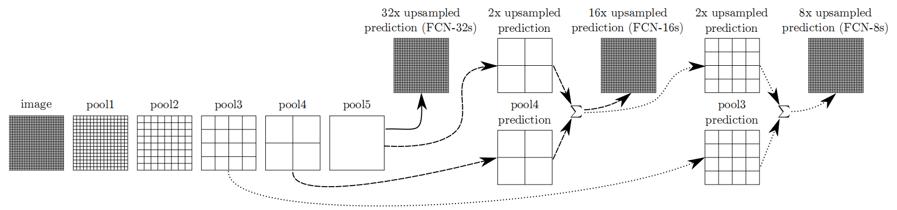
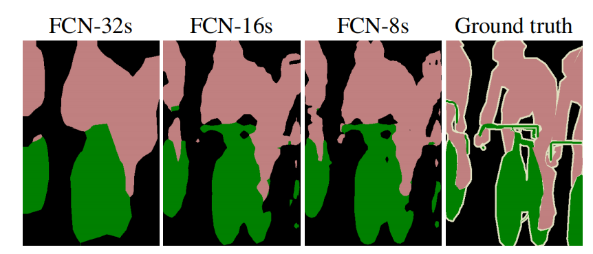

经典语义分割网络:FCN
从分类任务说起
语义分割是一个像素级的分类任务。
在图像分类任务中，输入一张图片，输出这张图片的类别。
在语义分割任务中，输入一张图片，输出这张图片中每一个像素所属类别，因此，语义分割中输入的图像(通道数为3，一般的图片通常含有RGB这3个通道)尺寸和输出结果(也是一张图，通道数为1，每个像素点的取值代表该像素点所属类别对应的取值)的尺寸是一样的。
在之前，我们已经实现过许多的分类网络，这些网络最后都在卷积层后面接上全连接层，以输出分类结果。
但是语义分割的输出是一张单通道的图片，所以直接将以上网络拿过来用是行不通的。
FCN的网络结构
FCN( Fully Convolutional Networks, 全卷积网络)开创性的将分类网络中的全连接层改成了卷积层，从而使得整个网络只含有卷积层，这也是FCN名字的由来。
输入的图像经过分类网络的最后一层卷积层之后，往往的得到的是通道数较大，而尺寸较小的特征图，比如6000*7*7。
在这个卷积层后面接一个1*1卷积，可以将输出特征图的通道数设置成总的类别数，而特征图尺寸不变。
之后，对1*1卷积得到的特征图进行上采样操作(插值or转置卷积)就能够得到与输入图像尺寸一致的输出结果了。
FCN中的跳跃连接
普通卷积是对特征图进行下采样操作，也就是每次卷积操作后输出的特征图尺寸都会减小；
而转置卷积或插值是对特征图进行上采样，也就是每操作一次能够使得特征图尺寸变大。
下面这张图展示了FCN中3种不同的上采样策略：

假设每一个格子代表一个像素，那么最左侧的image的尺寸为32*32，将其做2倍下采样，得到pool1，它的尺寸是16*16的，以此类推。
这样，从左往右，image到 pool5的尺寸分别是：
1 | image:32*32 |
现在，对结果pool5进行上采样，以恢复到输入的image的尺寸(32*32).
一种策略是：直接将1*1的pool5上采样32倍，对应图中的FCN-32s.
另一种策略是：先将pool5上采样2倍，然后将结果与pool4相加，此时得到2*2的特征图，之后对这个特征图进行16倍上采样即可恢复道输入image的尺寸，这对应着图中的FCN-16s.
还有一种策略是：先将pool5上采样2倍，然后将结果与pool4相加，此时得到2*2的特征图，之后对这个特征图进行2倍上采样，然后将结果与pool3相加，此时得到4*4的特征图，之后对这个特征图进行8倍上采样即可恢复道输入image的尺寸，这对应着图中的FCN-8s.
后两种策略将之前的特征图信息加了进来，进行了特征融合，这有些类似ResNet中的跳跃连接。
以上三种策略的效果对比如下：

可以看到，将不同尺寸的特征图通过上采样和加法进行融合可以使得分割效果变得更好(FCN-8s).
自从FCN问世后，更多使用深度学习进行语义分割的网络结构出现了，我们以后慢慢介绍。
参考：